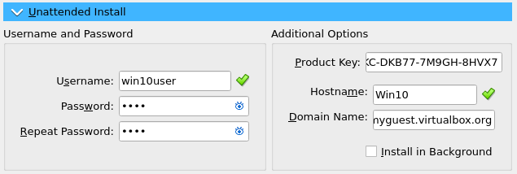
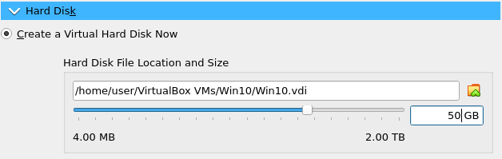

Contenidos
1. Descarga del archivo .iso
Al igual que con Linux, necesitamos un archivo .iso para la instalación del sistema operativo en la máquina virtual. En el caso de Windows 10, necesitamos descargarnos un instalador en el cual nos dara la opcion a instalarlo en el sistema o descargarlo en un directorio que le indiquemos. Para descargarnos esta herramienta podemos hacerlo desde este enlace.

En esta herramienta que nos proporciona Microsoft, aceptamos las condiciones y seleccionamos la opción para instalar Windows en un USB. Este nos permitirá descargar el archivo .iso en un directorio de nuestra elección.

Seguimos con la instalación y utilizamos los ajustes recomendados hasta llegar a la siguiente selección de opciones, en esta elegimos archivo ISO y elegimos donde va a ser descargado el archivo.

2. Creación y configuración en VirtualBox
Igual que con Linux, creamos una nueva máquina virtual y realizamos la configuración de esta, esta vez con el archivo .iso de Windows.

Seleccionamos el archivo .iso de Windows.

Opcionalmente podemos cambiarle el nombre de usuario y la contraseña que vienen por defecto. También podemos asignarle una clave de activación genérica para poder utilizar el sistema sin problemas. En la siguiente pagina podemos encontrar varias de ellas dependiendo de la versión de Windows que instalemos. Utilizamos las claves (retail).
Asignamos el hardware a la máquina virtual. El minimo que podemos asignarle de memoria RAM es 2GB, y 2 nucleos pero le asignamos algo más para que el sistema no vaya lento.

Asignamos el espacio del disco duro virtual. El mínimo que se recomienda para Windows es 20GB.
Y por último, asignamos al adaptador de red como red NAT, y seleccionamos el que se creó anteriormente.

3. Windows 10
Una vez creada la máquina virtual, la arrancamos y dejamos que se instale, esto puede tardar varios minutos. Al terminar se reiniciará y una vez entremos en el sistema iremos a Windows Update, donde se descargan las actualizaciones que haya disponible. Y una vez descargada reiniciamos la máquina virtual.


4. Configuración de Windows
El siguiente paso consiste en activar las opciones para compartir archivos a través de la red en Windows. Para ello vamos a buscar "advanced sharing" o "uso compartido avanzado". Y activamos las dos opciones que aparecen.
Una vez estén estas dos opciones activadas, nos dirigimos al firewall de Windows. Buscamos "windows defender" o "firewall" y hacemos click en este.


Una vez entremos en las opciones avanzadas, nos dirigimos a "reglas de entrada" o "inbound rules" y activamos las opciones indicadas en la siguiente imagen, "Archivos e impresoras compartidos" o "File and Printer Sharing", estas son las reglas que permitirán el acceso a la carpeta compartida. Vamos a activarlas todas aunque solo se va a hacer uso de las reglas (SMB-In).

5. Ping
En este paso tan solo vamos a comprobar, con las dos máquinas virtuales encendidas al mismo tiempo, que estas máquinas se
comunican entre ellas. Si se ha seguido todo paso a paso deberíamos obtener el siguiente resultado.
Buscamos "cmd" en el buscador de Windows.
Una vez entremos en este utilizaremos el siguiente comando con la dirección IP que obtuvimos anteriormente.
ping 10.0.2.4

Como se puede observar las máquinas se comunican entre ellas y con esto pasamos al último paso en el cual vamos a acceder a la carpeta compartida.
6. Carpeta "compartida"
En este último paso nos conectaremos a la dirección IP de nuestra máquina de Linux a través de Windows. Para ello en el buscador ponemos "run" o "ejecutar" y aquí introducimos la dirección IP de la siguiente manera:
\\10.0.2.4\compartida
Una vez introducimos esto, nos pedirá un usuario y contraseña que serán los que creamos previamente en el tutorial de Linux.

Y si todo ha salido correctamente y el usuario y contraseña son correctos, podremos ver nuestro "archivo-linux" desde Windows.